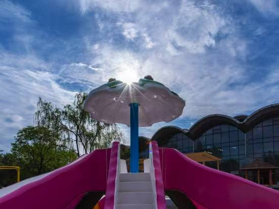
01 / Site photography
Open a project to see its available photographs and design materials.
The presence of a project folder does not independently verify contract scope, completion, construction responsibility or permission to publicise client materials. Private source-folder links are not published.

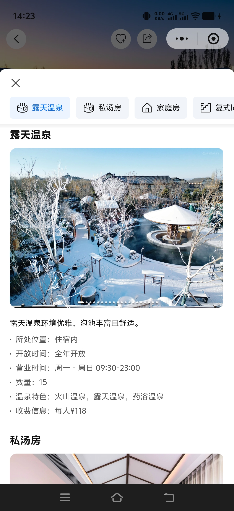
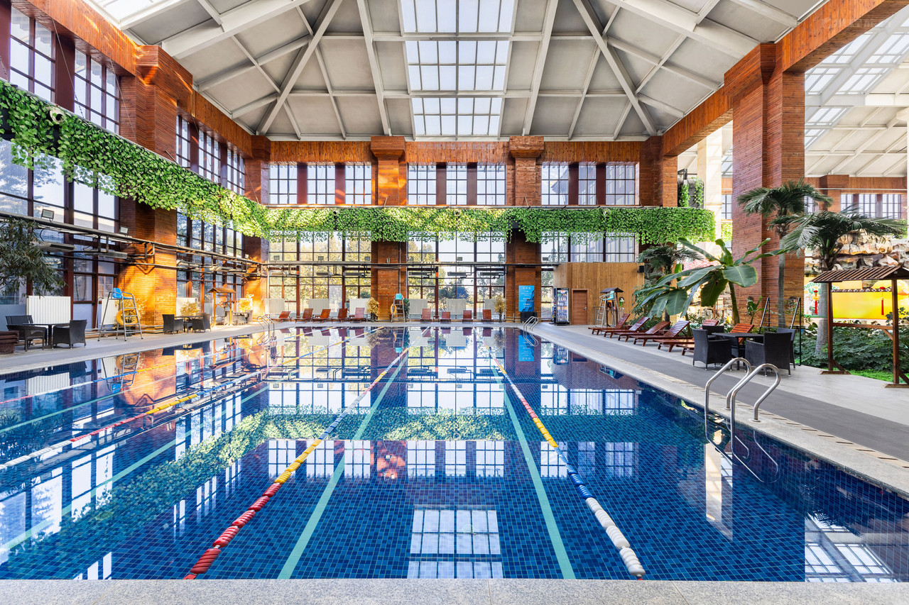
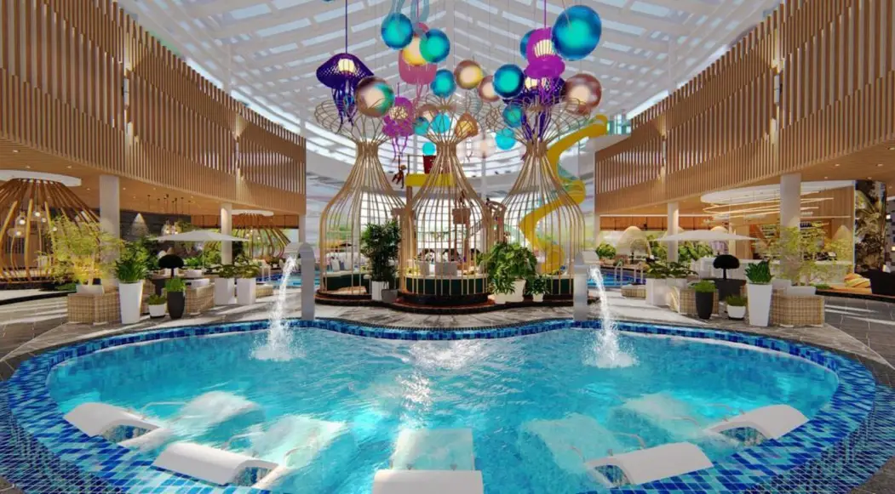
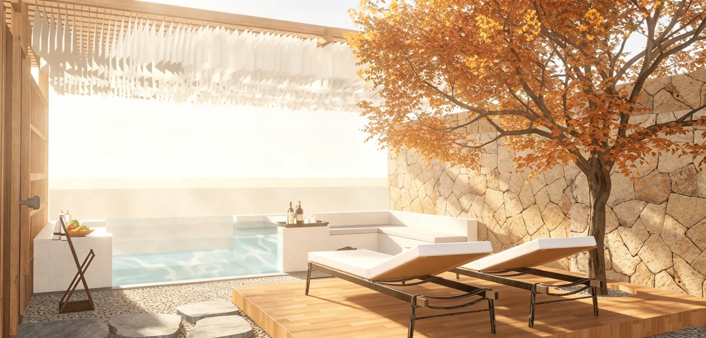
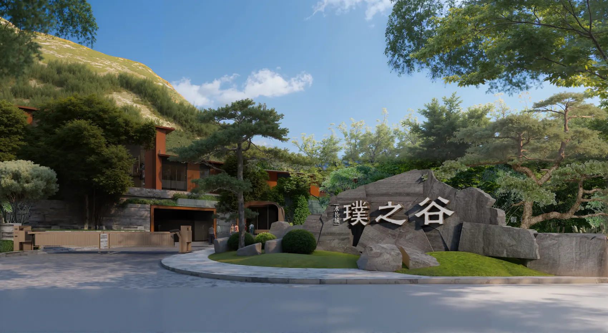

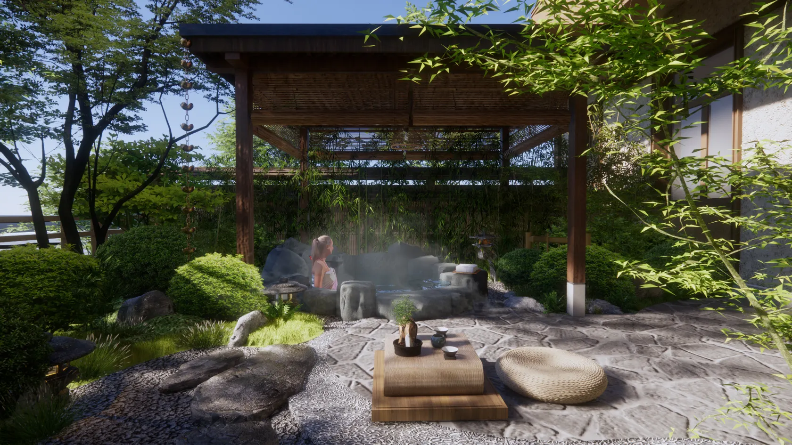
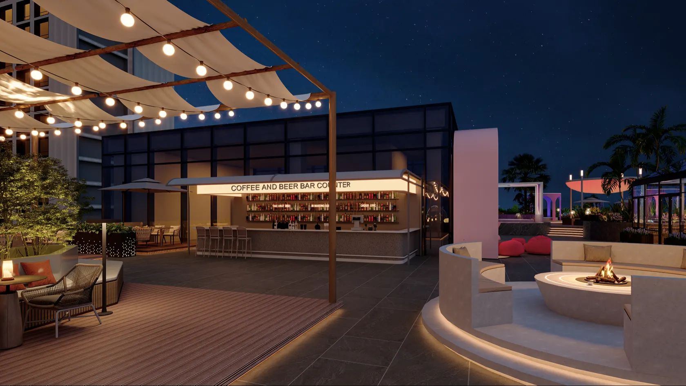
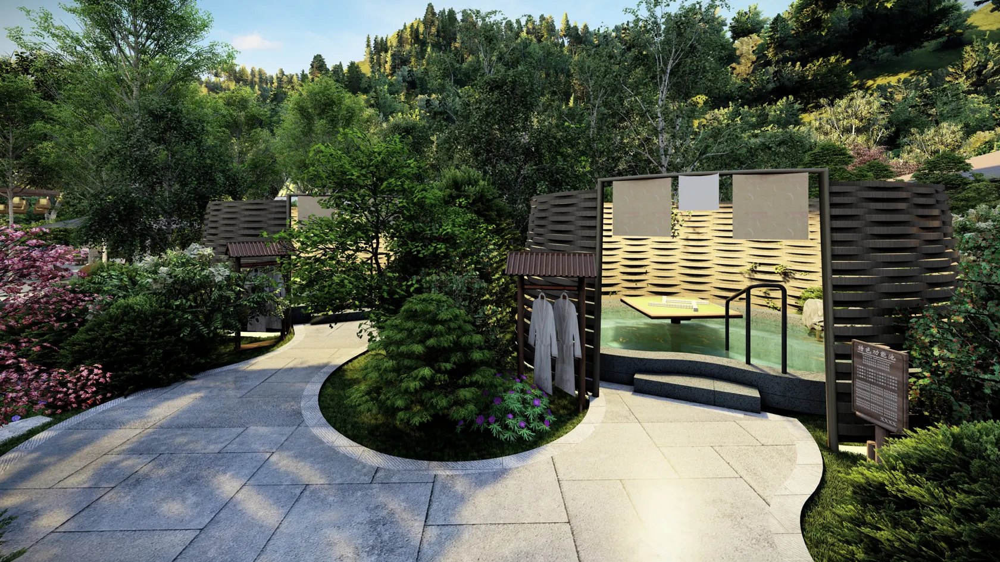

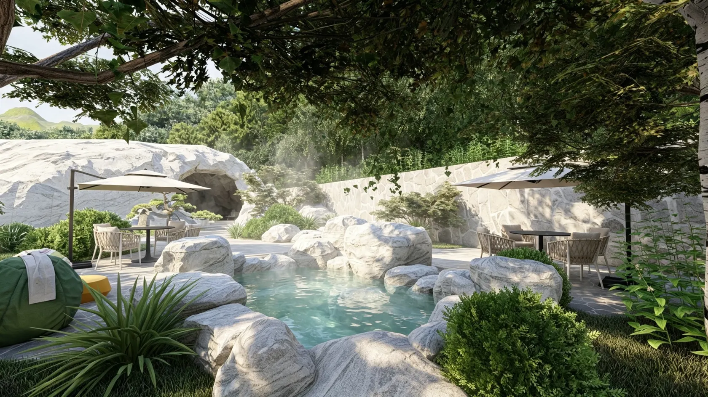
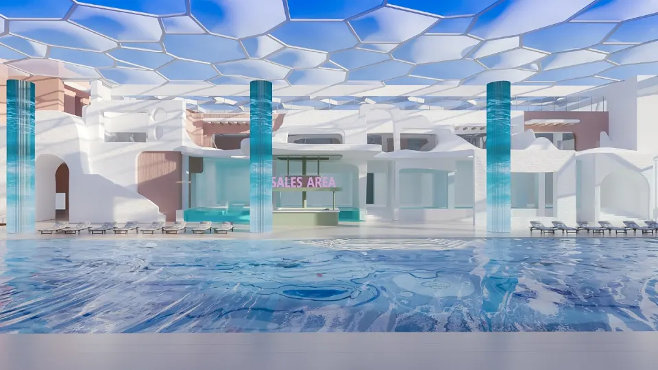
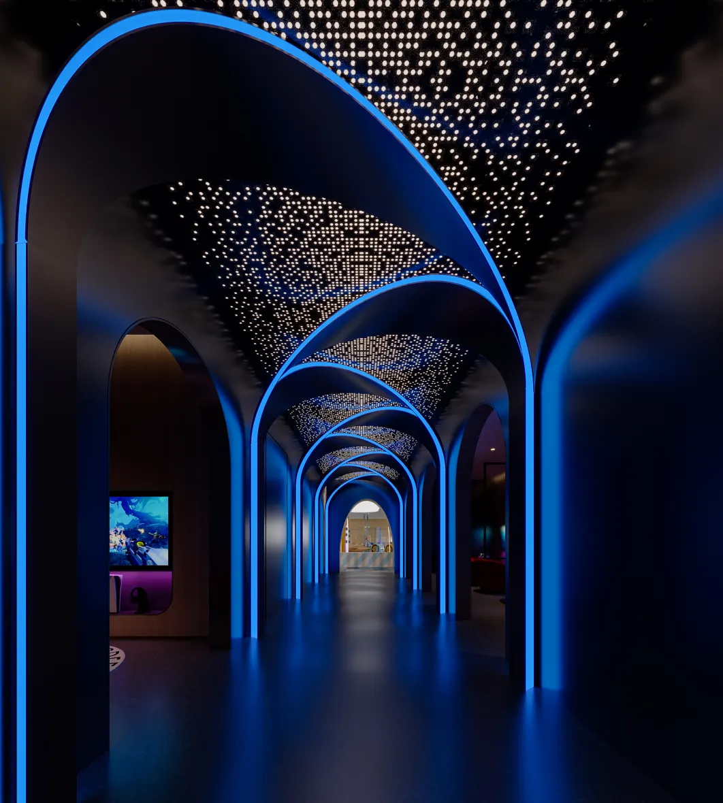
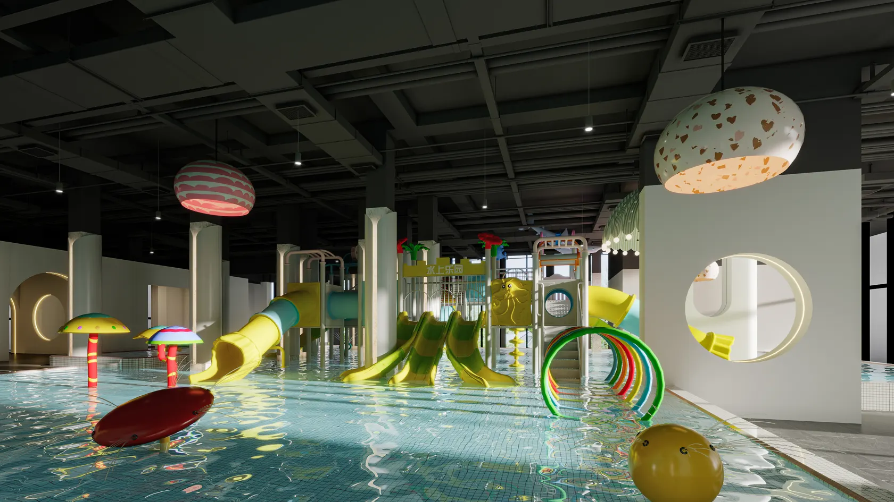

The company profile mentions Gubei Water Town, Beijing Jiuhua Resort, Beijing Nangong Hot Spring Water World, Jinyu Badaling Hot Spring Hotel, Xiong’an International Hotel and a hotel ground-source heat-pump system in Stavsjö, Sweden. Exact scopes and permissions should be checked before publishing these as verified case studies.
The company profile lists a ground-source heat-pump heating system for a hotel in Stavsjö, Sweden.
Explore geothermal engineering → Browse engineering drawings →